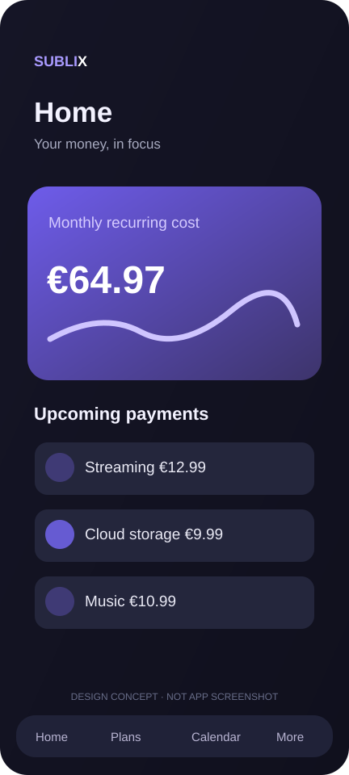
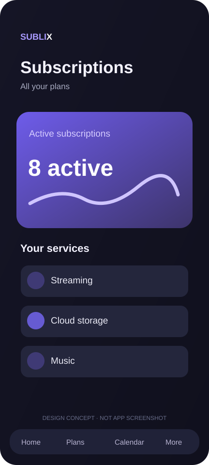
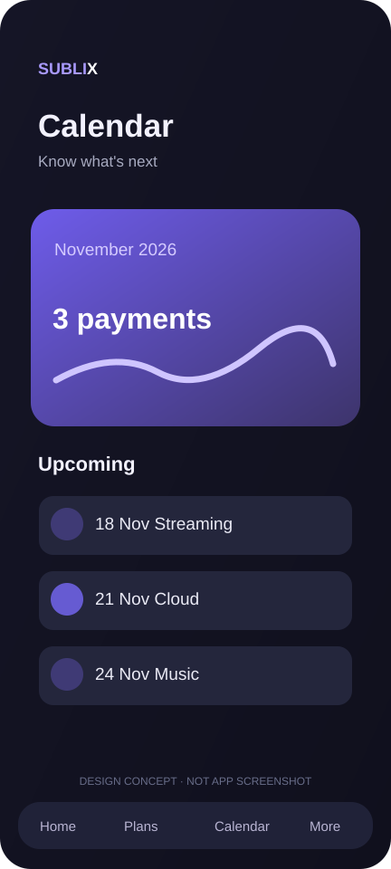
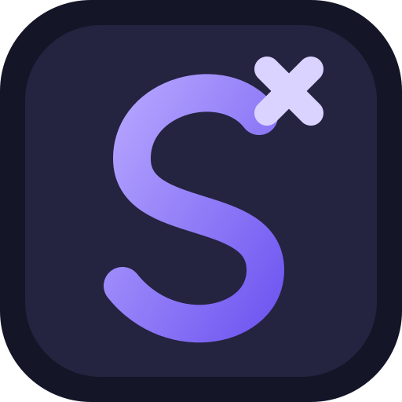

See what’s coming next.
View the next scheduled payments and plan ahead with a renewal calendar.
Streaming plan
€12.99 18 Nov Cloud storage
€9.99 21 NovTrack recurring expenses, see what’s coming, and review your spending in one clear place. No account. No bank connection. Just control.

Everything important about recurring subscriptions, without the noise.
View the next scheduled payments and plan ahead with a renewal calendar.
Understand your monthly equivalent and distinguish it from actual scheduled charges.
Keep subscription records on your device. No bank passwords, mail access or sign-in.
Thoughtful dark surfaces, crisp typography, simple actions and accessible controls.
Design concepts for the Home, Subscriptions, Calendar and Insights experiences.


Visual concepts only. Final app screenshots will be added after emulator and device validation.
Two independent Android apps. No account required for either edition.

Feature availability depends on the published version. Publishing Pro installation files publicly makes them accessible without a paid storefront.
No. SubliX is designed for local use. Neither the mobile app nor this website requires an account.
No. You manually record your subscriptions. SubliX never asks for your banking credentials.
No. Marking a plan as cancelled only updates your local records. You must cancel with the service provider.
Free and Pro use different app identifiers and databases. A reviewed export/import process is planned; installing Pro does not automatically migrate local data.
Check the GitHub Releases page. Only packages explicitly published there are available for installation.
Discover the project and follow each verified release.
View SubliX on GitHub ↗